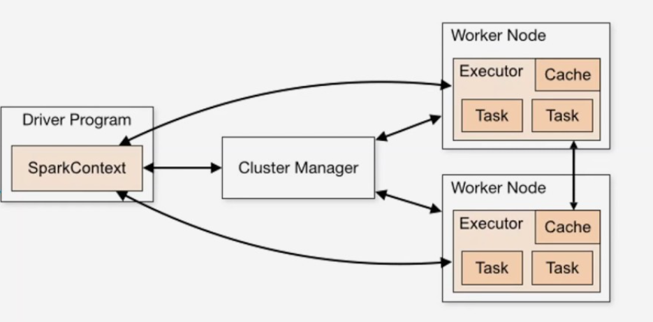
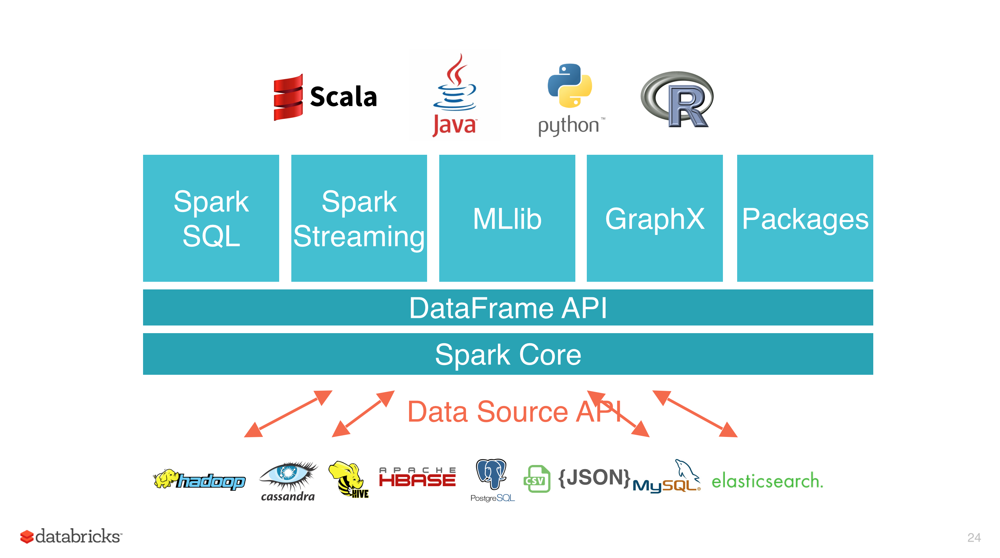
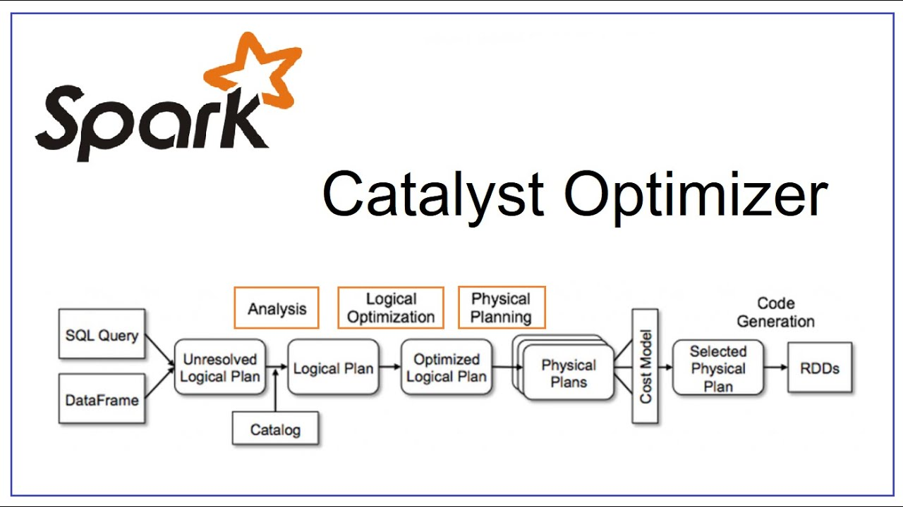

Куратор раздела

Подвальный Артем, Data Engineer/Data Scientist
Хочешь перейти в дата-инженерию, но не знаешь с чего начать? Пиши - составим резюме, продумаем твое развитие https://t.me/ampodvalniy
Хочешь улучшить текущий раздел, внести недостающее или поправить формулировку? Предлагай PR и тегай @Artemlin6231
Немного об этой главе
Apache spark - это распределенный фреймворк обработки данных, ставший де-факто стандартом в обработке больших данных. Требуется практически повсевместо в работе дата-инженера.
Приятного изучения)
Основы Apache Spark и RDD
Введение
Apache Spark — это масштабируемая платформа для распределённой обработки данных, которая позволяет выполнять вычисления в памяти, обеспечивая высокую производительность и гибкость. Она подходит как для пакетной (batch), так и для потоковой (streaming) обработки данных.
Ключевые идеи Apache Spark
-
Эффективная DAG-модель вычислений
Spark строит направленный ациклический граф (DAG), отображающий зависимости между этапами обработки. Это обеспечивает более гибкое и оптимизированное планирование по сравнению с классическим MapReduce. -
Ленивая модель исполнения
Преобразования не выполняются сразу. Spark откладывает их выполнение до вызова операции-действия, что позволяет эффективно планировать и объединять задачи. -
Гибкое управление памятью
- Предпочтение хранения данных в памяти
- Сброс данных на диск при нехватке ресурсов
- Возможность комбинированного хранения
-
Поддержка различных форматов сериализации
-
Широкая поддержка языков
Поддерживаются API для Scala, Java, Python и R -
Единый API для batch и streaming обработки
RDD (Resilient Distributed Dataset)
RDD — основная абстракция данных в Spark, представляющая собой неизменяемую, распределённую коллекцию объектов.
Основные свойства RDD:
-
Неизменяемость и отказоустойчивость (fault tolerance)
Все операции над RDD являются детерминированными и безопасными к сбоям. -
Два типа операций:
- Transformations — возвращают новый RDD, операции ленивые
Примеры:map,filter,join -
Actions — инициируют выполнение вычислений
Примеры:count,collect,save -
Партиционирование
Данные разбиты на независимые части (partition), которые обрабатываются параллельно. -
Кэширование данных
Поддерживаются различные уровни хранения: memorydiskmemory & diskexternal*(при внешней настройке)
Архитектура и модель вычислений Spark

Компоненты архитектуры
- Driver Program
Главный управляющий процесс, с которого начинается выполнение приложения Spark. Он: - инициализирует
SparkContext; - строит DAG вычислений;
- управляет разбиением на задачи;
-
распределяет задачи по
executors. -
SparkContext
Ядро взаимодействия приложения с кластером. Он: - подключается к
Cluster Manager; - планирует вычисления;
-
отслеживает выполнение задач и собирает результаты.
-
Cluster Manager
Менеджер ресурсов, который: - отслеживает доступные ресурсы;
- выделяет
worker-узлы; -
запускает
executors.
Поддерживаемые варианты: Standalone, YARN, Kubernetes, Mesos. -
Worker Node
Узел, на котором исполняются задачи Spark. Каждый узел может запускать один или несколькоexecutors. -
Executor
Процесс, который: - исполняет задачи;
- кэширует промежуточные данные;
-
взаимодействует с
driverдля отправки результатов. -
Task
Минимальная единица вычислений в Spark. Каждое преобразование над данными разбивается на множествоtasks, которые распределяются междуexecutors. -
Cache
Используется для хранения данных в памяти или на диске с целью ускорения повторных вычислений.
Как работает модель вычислений Spark
- Пользователь пишет Spark-программу с использованием
RDD,DataFrameилиDataset. - Программа запускается, и
DriverсоздаётSparkContext. - Spark строит DAG (направленный ациклический граф) всех ленивых операций (
transformations). - DAG разбивается на этапы (stages), каждый из которых состоит из задач (
tasks). - Через
Cluster Manager, Spark запускаетexecutor'ы наworker-узлах. Tasksисполняются параллельно наexecutors.- Промежуточные данные могут кэшироваться.
- После завершения все результаты собираются и возвращаются
Driver-у.
Экосистема Apache Spark
Apache Spark — представляет собой целую экосистему модулей, предоставляющую мощные средства для работы с данными в различных форматах и задачах: от SQL-запросов и машинного обучения до потоковой обработки и анализа графов.

Архитектура уровней
Экосистема Spark построена на многоуровневой архитектуре, где каждый уровень отвечает за свою часть функциональности.
1. Spark Core
Базовый компонент Spark, реализующий:
- Распределённое планирование и выполнение задач
- Управление памятью
- Отказоустойчивость
- Модель RDD (Resilient Distributed Dataset)
Все остальные компоненты построены поверх Spark Core.
2. DataFrame API
Предоставляет более высокоуровневую абстракцию над RDD — DataFrame (табличное представление данных). Обеспечивает:
- SQL-подобный синтаксис
- Оптимизацию исполнения через Catalyst Optimizer
- Поддержку различных источников данных через Data Source API
3. Библиотеки Spark
На верхнем уровне располагаются модули для специализированных задач:
| Модуль | Назначение |
|---|---|
| Spark SQL | Выполнение SQL-запросов, работа с таблицами, интеграция с Hive |
| Spark Streaming | Обработка потоковых данных в реальном времени |
| MLlib | Машинное обучение: классификация, регрессия, кластеризация и др. |
| GraphX | Графовые вычисления и анализ социальных сетей |
| Packages | Расширения и сторонние библиотеки, добавляемые через Spark Packages |
4. Data Source API
Позволяет подключаться к множеству внешних источников данных:
- Hadoop / HDFS
- Apache Hive
- Apache HBase
- PostgreSQL, MySQL
- CSV, JSON, Parquet
- Elasticsearch и другие
Spark автоматически оптимизирует чтение, запись и обработку данных из этих источников.
Поддерживаемые языки
Spark поддерживает API на нескольких языках:
- Scala (родной язык для Spark)
- Java
- Python (PySpark)
- R (SparkR)
DataFrame API и Catalyst Optimizer в Apache Spark
Что такое DataFrame API?
DataFrame — это одна из высокоуровневых абстракций в Apache Spark, представляющая собой распределённую коллекцию данных в виде таблицы (аналогично таблице в реляционной базе или датафрейму в Pandas/R).
DataFrame API предоставляет удобные и декларативные средства работы с данными:
- SQL-подобный синтаксис (
select,filter,groupByи т.д.) - Поддержка различных источников: JSON, CSV, Parquet, Hive, JDBC, и т.д.
- Поддержка нескольких языков: Scala, Python (PySpark), Java, R
- Интеграция с Catalyst Optimizer для автоматической оптимизации запросов
Как работает Catalyst Optimizer?
Catalyst — это движок оптимизации запросов в Spark SQL и DataFrame API. Он обеспечивает автоматическую трансформацию запросов в эффективные планы выполнения с учётом структуры данных и статистики.

Этапы обработки запроса в Catalyst:
-
SQL или DataFrame запрос
Пользователь пишет SQL-запрос или использует DataFrame API.
-
Unresolved Logical Plan
Spark строит первоначальный логический план, который ещё не содержит информации о типах данных и таблицах.
-
Analysis
С помощью каталога (catalog) Spark разрешает имена таблиц, столбцов и типов данных. Получается разрешённый логический план (
Logical Plan). -
Logical Optimization
На этом этапе Spark применяет правила оптимизации, такие как:
- удаление ненужных столбцов (projection pruning),
- фильтрация как можно раньше (predicate pushdown),
- переупорядочивание
joins.
Результат — оптимизированный логический план (Optimized Logical Plan).
-
Physical Planning
Spark генерирует несколько вариантов физического плана — конкретных стратегий выполнения операций.
-
Cost Model
Для выбора наилучшего плана Spark применяет модель стоимости, оценивая ресурсоёмкость каждого варианта.
-
Code Generation
Выбранный физический план используется для генерации Java/Scala кода, который преобразуется в RDD-процессы.
Преимущества Catalyst и DataFrame API
| Преимущество | Описание |
|---|---|
| Высокая производительность | Благодаря автоматической оптимизации |
| Упрощение разработки | SQL-подобный синтаксис, декларативный подход |
| Поддержка многих форматов | CSV, Parquet, JSON, Hive, JDBC и др. |
| Расширяемость | Поддержка пользовательских функций (UDF) и типов данных |
| Совместимость | Интеграция с MLlib, GraphX, Streaming и др. |
Заключение
DataFrame API и движок Catalyst являются основой гибкости и производительности Spark. Они позволяют пользователям сосредоточиться на логике анализа данных, а оптимизация и исполнение остаются на стороне платформы.
Spark SQL и DataFrame API дают декларативный уровень, а Catalyst автоматически превращает его в оптимальный код.